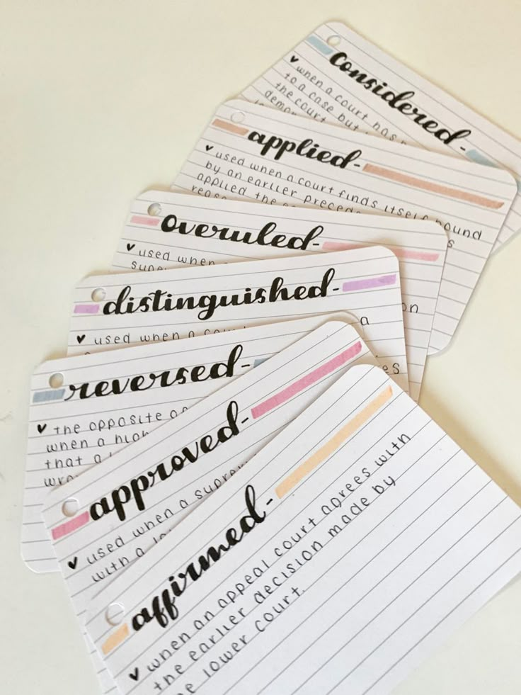

Flashcards
¿Qué son las Flashcards?
Las flashcards son una herramienta de estudio que consiste en tarjetas con información en ambos lados. Por lo general, en un lado se escribe una pregunta o concepto, y en el otro lado se escribe la respuesta o explicación. Este método es especialmente útil para memorizar datos, fechas, vocabulario, fórmulas y conceptos clave.
Su uso se basa en la técnica de repetición espaciada, que consiste en revisar la información en intervalos de tiempo cada vez más largos. Esto ayuda a consolidar la memoria a largo plazo y a retener la información de manera más efectiva.


¿Cómo usar las Flashcards?
- Escribe una pregunta o concepto en un lado de la tarjeta.
- Escribe la respuesta o explicación en el otro lado.
- Revisa las tarjetas regularmente, intentando recordar la respuesta antes de voltear la tarjeta.
- Separa las tarjetas en grupos según si las respuestas fueron correctas o incorrectas.
- Repite el proceso, enfocándote más en las tarjetas con respuestas incorrectas.
Beneficios de las Flashcards
- Facilitan la retención: La técnica de repetición espaciada mejora la retención de información a largo plazo.
- Interactivas: Promueven una participación activa del estudiante.
- Motivación: Ver el progreso genera un sentido de logro constante.
- Comprensión rápida: Permiten repasar mucho material en poco tiempo.
- Aprendizaje autónomo: Fomentan la responsabilidad del aprendizaje personal.